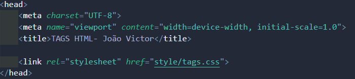
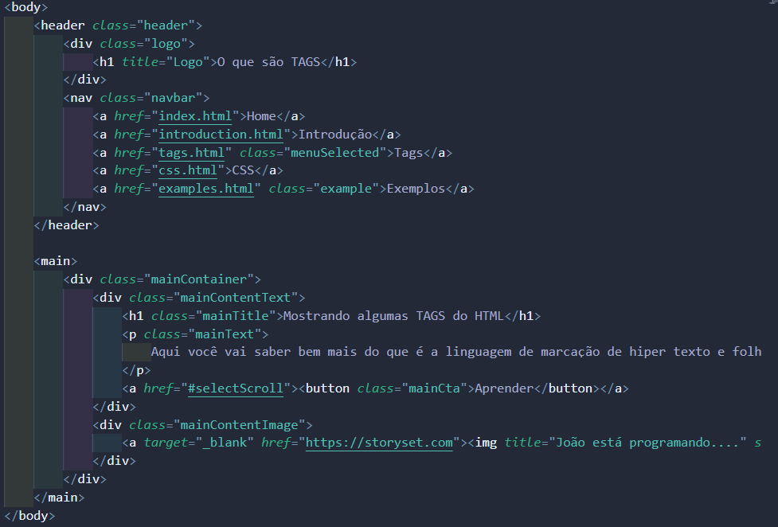
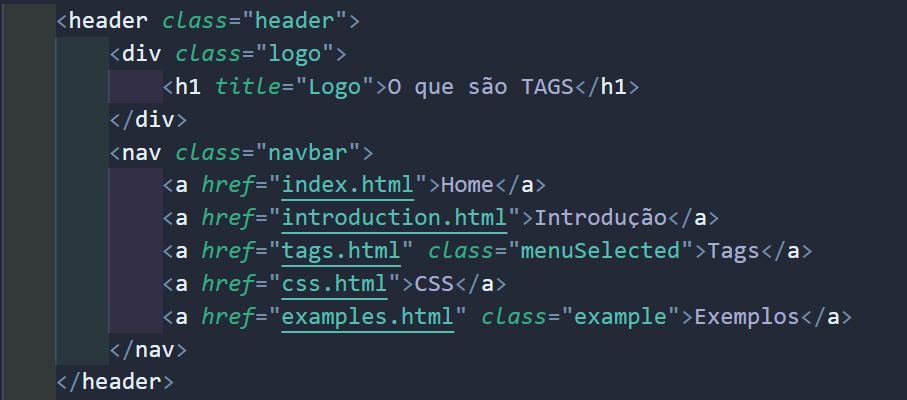
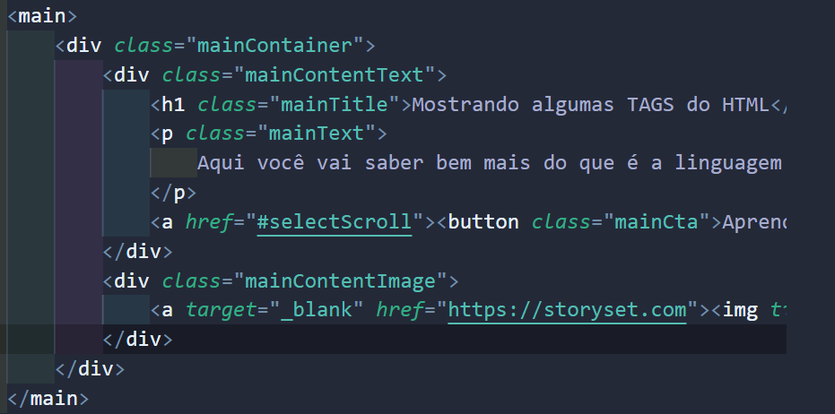
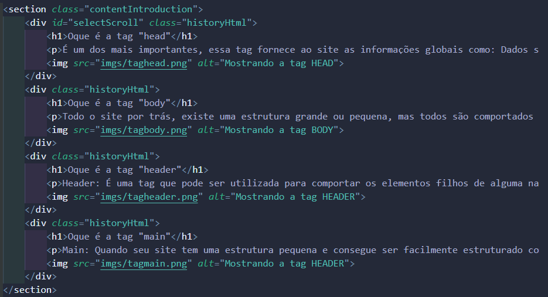
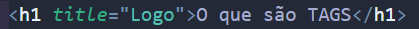
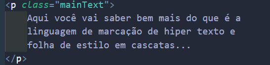
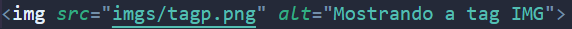
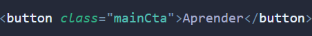
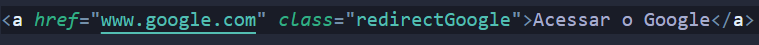

head: É um dos mais importantes, essa tag engloba e fornece ao site as informações globais como: Dados sobre o documento, metadados para o SEO do Google "rankear" melhor a sua página, título da página, link de scripts JavaScript e CSS, entre outros...
meta charset="utf-8": O programador por principio pode definir o "set" de configurações iniciais de visualização dos caracteres do site, o padrão mais conhecido é o UTF-8, ele consegue codificar caracteres especiais.
meta name="viewport": A função dessa tag é controlar como será exibido o site em um dispositivo móvel, como celular, tabled, etc.
title: Essa tag é uma das mais simples, o conteúdo que você colocar dentro dela vai ser exibido como nome da página, nas abas dos navegadores.
link: Se você quiser "vincular" o CSS com a sua página HTML, vai precisar usar essa tag, o rel="stylesheet" fala que é um arquivo de folha de estilo e o href="style/tags.css" indica aonde está localizado o meu arquivo CSS.
body: Todo o site por trás, existe uma estrutura grande ou pequena, mas todos são comportados através de uma tag chamada "body", é necessário que exista algum elemento filho dentro do body para que possa ser visualizado algo no site.
header: É uma tag que pode ser utilizada para comportar os elementos filhos de alguma navbar ou conteudo que seja o cabeçalho principal.
main: Quando seu site tem uma estrutura pequena e consegue ser facilmente estruturado com 3 partes, por exemplo: header, main e footer... o main seria aonde ficaria o conteúdo principal do site.
section: Seu site vai ter vários tópicos ou conteúdos? Eu recomendo que coloque a tag section, para que você possa estruturar de uma forma mais simples e de fácil compreensão.
h1: Essa tag com toda certeza é uma das mais usadas, mais de fato é, porque ela pode ser usada toda vez que você quer mencionar um titúlo no seu site. Ela vai do H1 até o H6, alterando o tamanho da fonte, mais você consegue tranquilamente mudar o tamanho da fonte de qualquer tag HTML utilizando o CSS.
p: Ela conjuntamente à tag H1 vai ser usada demais, porque geralmente depois de um título vem uma paragrafo para descrever o conteúdo do título, então essa tag sem dúvidas vai ser usada muito.
img: A tag img é usada para você linkar uma imagem ao seu site, ela tem dois parâmetros, um é o diretório aonde a imagem se encontra e o outro é o "alt", para que as pessoas com algum tipo de dificuldade ou deficiencia consiga saber o que essa imagem se retrata.
button: Essa tag é muito boa, pelo seguinte motivo, quando você quer que o usuário faça alguma ação no seu site ou quer que ele seja redirecionado para algum lugar, muito provavelmente vai ser com a tag button.
a: Muito parecida com a função dos buttons, mais ela pode ser usada de forma mais inteligente, por exemplo, fazer uma navbar dentro de um header do seu site, fazendo com que as pessoas consigam navegar dentro das páginas do seu site. Nesse exemplo de baixo eu fiz ele redirecionando para o site do Google
